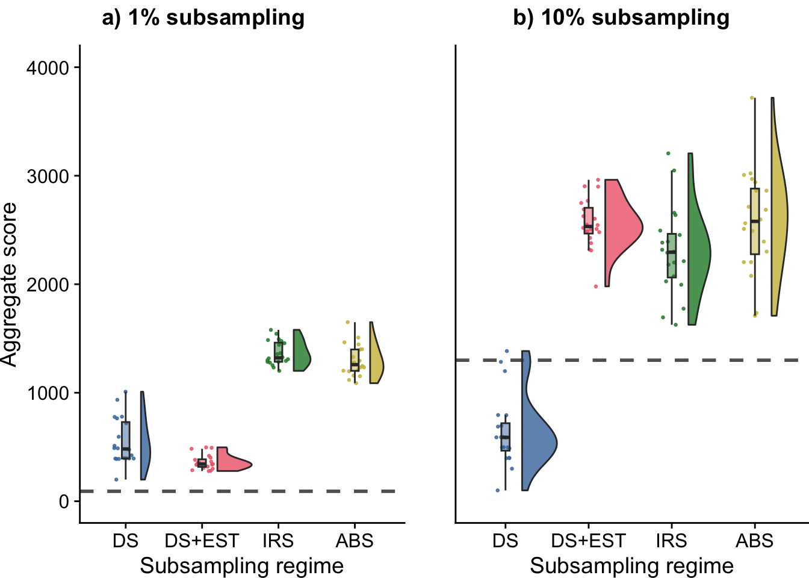

Chapter 7 Multi-path exploration diagnostic
experiment_slug <- "2023-12-28-phylo-sampling-diag"
working_directory <- paste0(
"experiments/",
experiment_slug,
"/analysis/"
)
if (exists("bookdown_wd_prefix")) {
working_directory <- paste0(
bookdown_wd_prefix,
working_directory
)
}7.1 Dependencies
library(tidyverse)
library(cowplot)
library(RColorBrewer)
library(khroma)
library(rstatix)
library(knitr)
source("https://gist.githubusercontent.com/benmarwick/2a1bb0133ff568cbe28d/raw/fb53bd97121f7f9ce947837ef1a4c65a73bffb3f/geom_flat_violin.R")print(version)## _
## platform aarch64-apple-darwin20
## arch aarch64
## os darwin20
## system aarch64, darwin20
## status
## major 4
## minor 2.1
## year 2022
## month 06
## day 23
## svn rev 82513
## language R
## version.string R version 4.2.1 (2022-06-23)
## nickname Funny-Looking Kid7.2 Setup
# Configure our default graphing theme
theme_set(theme_cowplot())
# Create a directory to store plots
plot_directory <- paste0(working_directory, "plots/")
dir.create(plot_directory, showWarnings=FALSE)
# Constants
focal_diagnostic <- "multipath-exploration"7.2.1 Load experiment summary data
summary_data_loc <- paste0(working_directory, "data/aggregate.csv")
summary_data <- read_csv(summary_data_loc)## Rows: 1080 Columns: 58
## ── Column specification ───────────────────────────────────────────────────────────────────────────────────────────────────────────────────────────────────────────
## Delimiter: ","
## chr (5): DIAGNOSTIC, EVAL_FIT_EST_MODE, EVAL_MODE, SELECTION, STOP_MODE
## dbl (53): ACCURACY, CREDIT, DIAGNOSTIC_DIMENSIONALITY, EVAL_MAX_PHYLO_SEARCH...
##
## ℹ Use `spec()` to retrieve the full column specification for this data.
## ℹ Specify the column types or set `show_col_types = FALSE` to quiet this message.summary_data <- summary_data %>%
mutate(
evals_per_gen = case_when(
EVAL_MODE == "cohort-full-compete" ~ 1.0 / NUM_COHORTS,
EVAL_MODE == "cohort" ~ 1.0 / NUM_COHORTS,
EVAL_MODE == "down-sample" ~ TEST_DOWNSAMPLE_RATE,
EVAL_MODE == "full" ~ 1.0,
EVAL_MODE == "indiv-rand-sample" ~ TEST_DOWNSAMPLE_RATE,
EVAL_MODE == "phylo-informed-sample" ~ TEST_DOWNSAMPLE_RATE
),
EVAL_FIT_EST_MODE = case_when(
EVAL_FIT_EST_MODE == "ancestor-opt" ~ "ancestor",
EVAL_FIT_EST_MODE == "relative-opt" ~ "relative",
.default = EVAL_FIT_EST_MODE
),
.keep = "all"
) %>%
mutate(
eval_label = case_when(
# Clean up down-sample label
EVAL_MODE == "down-sample" & EVAL_FIT_EST_MODE != "none" ~ paste("down-sample", EVAL_FIT_EST_MODE, sep="-"),
.default = EVAL_MODE
),
) %>%
mutate(
evals_per_gen = as.factor(evals_per_gen),
DIAGNOSTIC = as.factor(DIAGNOSTIC),
SELECTION = as.factor(SELECTION),
EVAL_MODE = as.factor(EVAL_MODE),
NUM_COHORTS = as.factor(NUM_COHORTS),
TEST_DOWNSAMPLE_RATE = as.factor(TEST_DOWNSAMPLE_RATE),
EVAL_FIT_EST_MODE = factor(
EVAL_FIT_EST_MODE,
levels = c(
"none",
"ancestor",
"relative"
),
labels = c(
"None",
"Ancestor",
"Relative"
)
)
)
explore_summary_data <- filter(
summary_data,
DIAGNOSTIC == "multipath-exploration"
)7.2.2 Load experiment time series data
ts_data_loc <- paste0(working_directory, "data/time_series.csv")
ts_data <- read_csv(ts_data_loc)## Rows: 108000 Columns: 28
## ── Column specification ───────────────────────────────────────────────────────────────────────────────────────────────────────────────────────────────────────────
## Delimiter: ","
## chr (4): DIAGNOSTIC, EVAL_FIT_EST_MODE, EVAL_MODE, SELECTION
## dbl (24): NUM_COHORTS, SEED, TEST_DOWNSAMPLE_RATE, ave_depth, deleterious_st...
##
## ℹ Use `spec()` to retrieve the full column specification for this data.
## ℹ Specify the column types or set `show_col_types = FALSE` to quiet this message.ts_data <- ts_data %>%
mutate(
evals_per_gen = case_when(
EVAL_MODE == "cohort-full-compete" ~ 1.0 / NUM_COHORTS,
EVAL_MODE == "cohort" ~ 1.0 / NUM_COHORTS,
EVAL_MODE == "down-sample" ~ TEST_DOWNSAMPLE_RATE,
EVAL_MODE == "full" ~ 1.0,
EVAL_MODE == "indiv-rand-sample" ~ TEST_DOWNSAMPLE_RATE,
EVAL_MODE == "phylo-informed-sample" ~ TEST_DOWNSAMPLE_RATE
),
EVAL_FIT_EST_MODE = case_when(
EVAL_FIT_EST_MODE == "ancestor-opt" ~ "ancestor",
EVAL_FIT_EST_MODE == "relative-opt" ~ "relative",
.default = EVAL_FIT_EST_MODE
),
.keep = "all"
) %>%
mutate(
eval_label = case_when(
EVAL_MODE == "down-sample" & EVAL_FIT_EST_MODE != "none" ~ paste("down-sample", EVAL_FIT_EST_MODE, sep="-"),
.default = EVAL_MODE
)
) %>%
mutate(
evals_per_gen = as.factor(evals_per_gen),
DIAGNOSTIC = as.factor(DIAGNOSTIC),
SELECTION = as.factor(SELECTION),
EVAL_MODE = as.factor(EVAL_MODE),
NUM_COHORTS = as.factor(NUM_COHORTS),
TEST_DOWNSAMPLE_RATE = as.factor(TEST_DOWNSAMPLE_RATE),
EVAL_FIT_EST_MODE = factor(
EVAL_FIT_EST_MODE,
levels = c(
"none",
"ancestor",
"relative"
),
labels = c(
"None",
"Ancestor",
"Relative"
)
)
)
explore_ts_data <- ts_data %>%
filter(DIAGNOSTIC == "multipath-exploration")Summarize time series data
ts_summary_data <- ts_data %>%
group_by(SEED, DIAGNOSTIC, SELECTION, evals_per_gen, eval_label) %>%
summarize(
n = n(),
avg_num_unique_selected = mean(num_unique_selected),
total_optimal_trait_coverage_loss = sum(optimal_trait_coverage_loss)
)## `summarise()` has grouped output by 'SEED', 'DIAGNOSTIC', 'SELECTION',
## 'evals_per_gen'. You can override using the `.groups` argument.7.2.3 Plotting helper functions
The following function assist with exploratory plotting of different measurements from summary and time series data. Note that for these plots, standard lexicase reference is rendered at equivalent number of generations (instead of evaluations).
build_plot_summary_data <- function(data, diagnostic, selection, response) {
diag_data <- data %>% filter(DIAGNOSTIC == diagnostic)
full_median <- median(
filter(
diag_data,
eval_label == "full" & SELECTION == selection
)[[response]]
)
plot <- diag_data %>%
filter(
eval_label != "full" & SELECTION == selection
) %>%
ggplot(
aes_string(
x = "eval_label",
y = response,
fill = "eval_label"
)
) +
geom_hline(
yintercept = full_median,
size = 1.0,
alpha = 0.7,
color = "black",
linetype="dashed"
) +
geom_flat_violin(
position = position_nudge(x = .2, y = 0),
alpha = .8,
adjust = 1.5
) +
geom_point(
mapping = aes(color = eval_label),
position = position_jitter(width = .15),
size = .5,
alpha = 0.8
) +
geom_boxplot(
width = .1,
outlier.shape = NA,
alpha = 0.5
) +
scale_y_continuous(
# limits = c(-0.5, 100)
) +
scale_fill_bright() +
scale_color_bright() +
facet_grid(
SELECTION ~ evals_per_gen,
# nrow=2,
labeller = label_both
) +
theme(
legend.position = "none",
axis.text.x = element_text(
angle = 30,
hjust = 1
),
panel.border = element_rect(color = "gray", size = 2)
)
return(plot)
}
build_plot_time_series_single_sampling <- function(
data,
diagnostic,
selection,
sampling_level,
response
) {
diag_data <- data %>% filter(
DIAGNOSTIC == diagnostic &
SELECTION == selection &
evals_per_gen == sampling_level
) %>%
mutate(
sampling_level_label = sampling_level
)
full_diag_data <- data %>% filter(
DIAGNOSTIC == diagnostic & SELECTION == selection & eval_label == "full"
) %>%
mutate(
# Ensure that median line will sit in same facet
sampling_level_label = sampling_level
)
plot <- diag_data %>%
filter(
eval_label != "full"
) %>%
ggplot(
aes_string(
x = "ts_step",
# x = "evaluations",
y = {{ response }}
)
) +
stat_summary(
geom = "line",
fun = mean,
aes(
color = eval_label
)
) +
stat_summary(
geom = "ribbon",
fun.data = "mean_cl_boot",
fun.args = list(conf.int = 0.95),
alpha = 0.2,
linetype = 0,
aes(
color = eval_label,
fill = eval_label
)
) +
scale_fill_bright() +
scale_color_bright() +
# facet_wrap(
# ~ sampling_level_label,
# ncol = 1,
# labeller = label_both
# ) +
theme(
legend.position = "right"
) +
stat_summary(
data = full_diag_data,
geom = "line",
fun = median,
linetype = "dashed",
color = "black"
)
return(plot)
}
build_plot_time_series <- function(
data,
diagnostic,
selection,
response
) {
# Build 1% sampling plot and 10% sampling plot
p_01 <- data %>% build_plot_time_series_single_sampling(
diagnostic,
selection,
"0.01",
response
)
p_10 <- data %>% build_plot_time_series_single_sampling(
diagnostic,
selection,
"0.1",
response
)
title <- ggdraw() +
draw_label(
paste0(diagnostic, " - ", selection),
fontface = 'bold',
x = 0,
hjust = 0
) +
theme(
# add margin on the left of the drawing canvas,
# so title is aligned with left edge of first plot
plot.margin = margin(0, 0, 0, 7)
)
plot <- plot_grid(
title,
p_01 + labs(title = "1% subsampling") + theme(legend.position = "none"),
p_10 + labs(title = "10% subsampling") + theme(legend.position = "bottom"),
nrow = 3,
ncol = 1,
rel_heights = c(0.075, 1, 1)
)
return(plot)
}7.3 Aggregate score
7.3.1 Final - Lexicase selection
Note that lexicase baseline is shown @ 50,000 generations (not same number of evaluations).
p <- summary_data %>% build_plot_summary_data(
"multipath-exploration",
"lexicase",
"elite_true_agg_score"
)
ggsave(
filename = paste0(plot_directory, "explore-score-final-lex.pdf"),
plot = p + labs(title = "Exploration rate - Lexicase selection"),
width = 15,
height = 10
)7.3.1.1 Statistics
First, we’ll create a table of median / mean values for easy reference.
explore_summary_data %>%
group_by(DIAGNOSTIC, SELECTION, evals_per_gen, eval_label) %>%
summarize(
score_median = median(elite_true_agg_score),
score_mean = mean(elite_true_agg_score),
replicates = n()
) %>%
kable()## `summarise()` has grouped output by 'DIAGNOSTIC', 'SELECTION', 'evals_per_gen'.
## You can override using the `.groups` argument.| DIAGNOSTIC | SELECTION | evals_per_gen | eval_label | score_median | score_mean | replicates |
|---|---|---|---|---|---|---|
| multipath-exploration | lexicase | 0.01 | down-sample | 481.7515 | 545.8618 | 20 |
| multipath-exploration | lexicase | 0.01 | down-sample-ancestor | 343.1445 | 361.1433 | 20 |
| multipath-exploration | lexicase | 0.01 | indiv-rand-sample | 1321.9050 | 1364.0055 | 20 |
| multipath-exploration | lexicase | 0.01 | phylo-informed-sample | 1259.1250 | 1294.0110 | 20 |
| multipath-exploration | lexicase | 0.1 | down-sample | 588.2735 | 638.4361 | 20 |
| multipath-exploration | lexicase | 0.1 | down-sample-ancestor | 2532.2150 | 2560.9660 | 20 |
| multipath-exploration | lexicase | 0.1 | indiv-rand-sample | 2295.0250 | 2298.3220 | 20 |
| multipath-exploration | lexicase | 0.1 | phylo-informed-sample | 2579.3150 | 2578.1605 | 20 |
| multipath-exploration | lexicase | 1 | full | 9082.8750 | 9012.5545 | 20 |
| multipath-exploration | tournament | 0.01 | down-sample | 656.5385 | 772.8447 | 20 |
| multipath-exploration | tournament | 0.01 | down-sample-ancestor | 547.7415 | 543.6774 | 20 |
| multipath-exploration | tournament | 0.01 | indiv-rand-sample | 3524.0450 | 3413.6629 | 20 |
| multipath-exploration | tournament | 0.01 | phylo-informed-sample | 2894.6900 | 3195.8964 | 20 |
| multipath-exploration | tournament | 0.1 | down-sample | 2349.5100 | 2765.9270 | 20 |
| multipath-exploration | tournament | 0.1 | down-sample-ancestor | 3789.5600 | 3862.7725 | 20 |
| multipath-exploration | tournament | 0.1 | indiv-rand-sample | 5149.1700 | 5136.1509 | 20 |
| multipath-exploration | tournament | 0.1 | phylo-informed-sample | 5449.0750 | 5456.4340 | 20 |
| multipath-exploration | tournament | 1 | full | 4649.8450 | 5273.6010 | 20 |
Next, we run a Kruskal-Wallis test to check for differences.
For these tests, we only compare within a single subsampling level (evals_per_gen) and within the same selection scheme.
kw_test <- explore_summary_data %>%
filter(eval_label != "full") %>%
group_by(SELECTION, evals_per_gen) %>%
kruskal_test(elite_true_agg_score ~ eval_label) %>%
mutate(sig = (p < 0.05)) %>%
unite(
"comparison_group",
SELECTION,
evals_per_gen,
sep = "_",
remove = FALSE
)
kable(kw_test)| comparison_group | SELECTION | evals_per_gen | .y. | n | statistic | df | p | method | sig |
|---|---|---|---|---|---|---|---|---|---|
| lexicase_0.01 | lexicase | 0.01 | elite_true_agg_score | 80 | 63.64833 | 3 | 0.00e+00 | Kruskal-Wallis | TRUE |
| lexicase_0.1 | lexicase | 0.1 | elite_true_agg_score | 80 | 48.94519 | 3 | 0.00e+00 | Kruskal-Wallis | TRUE |
| tournament_0.01 | tournament | 0.01 | elite_true_agg_score | 80 | 30.85796 | 3 | 9.00e-07 | Kruskal-Wallis | TRUE |
| tournament_0.1 | tournament | 0.1 | elite_true_agg_score | 80 | 10.82091 | 3 | 1.27e-02 | Kruskal-Wallis | TRUE |
# Grab group names of significant comparisons
sig_kw_groups <- filter(kw_test, p < 0.05)$comparison_group
wrs_test <- explore_summary_data %>%
unite(
"comparison_group",
SELECTION,
evals_per_gen,
sep = "_",
remove = FALSE
) %>%
filter(
eval_label != "full" & comparison_group %in% sig_kw_groups
) %>%
group_by(SELECTION, evals_per_gen) %>%
pairwise_wilcox_test(elite_true_agg_score ~ eval_label) %>%
adjust_pvalue(method = "holm") %>%
add_significance("p.adj")
kable(wrs_test)| SELECTION | evals_per_gen | .y. | group1 | group2 | n1 | n2 | statistic | p | p.adj | p.adj.signif |
|---|---|---|---|---|---|---|---|---|---|---|
| lexicase | 0.01 | elite_true_agg_score | down-sample | down-sample-ancestor | 20 | 20 | 335.0 | 1.36e-04 | 0.0020400 | ** |
| lexicase | 0.01 | elite_true_agg_score | down-sample | indiv-rand-sample | 20 | 20 | 0.0 | 0.00e+00 | 0.0000000 | **** |
| lexicase | 0.01 | elite_true_agg_score | down-sample | phylo-informed-sample | 20 | 20 | 0.0 | 0.00e+00 | 0.0000000 | **** |
| lexicase | 0.01 | elite_true_agg_score | down-sample-ancestor | indiv-rand-sample | 20 | 20 | 0.0 | 0.00e+00 | 0.0000000 | **** |
| lexicase | 0.01 | elite_true_agg_score | down-sample-ancestor | phylo-informed-sample | 20 | 20 | 0.0 | 0.00e+00 | 0.0000000 | **** |
| lexicase | 0.01 | elite_true_agg_score | indiv-rand-sample | phylo-informed-sample | 20 | 20 | 274.0 | 4.60e-02 | 0.3220000 | ns |
| lexicase | 0.1 | elite_true_agg_score | down-sample | down-sample-ancestor | 20 | 20 | 0.0 | 0.00e+00 | 0.0000000 | **** |
| lexicase | 0.1 | elite_true_agg_score | down-sample | indiv-rand-sample | 20 | 20 | 0.0 | 0.00e+00 | 0.0000000 | **** |
| lexicase | 0.1 | elite_true_agg_score | down-sample | phylo-informed-sample | 20 | 20 | 0.0 | 0.00e+00 | 0.0000000 | **** |
| lexicase | 0.1 | elite_true_agg_score | down-sample-ancestor | indiv-rand-sample | 20 | 20 | 302.0 | 5.00e-03 | 0.0550000 | ns |
| lexicase | 0.1 | elite_true_agg_score | down-sample-ancestor | phylo-informed-sample | 20 | 20 | 190.0 | 7.99e-01 | 1.0000000 | ns |
| lexicase | 0.1 | elite_true_agg_score | indiv-rand-sample | phylo-informed-sample | 20 | 20 | 122.0 | 3.50e-02 | 0.2800000 | ns |
| tournament | 0.01 | elite_true_agg_score | down-sample | down-sample-ancestor | 20 | 20 | 291.0 | 1.30e-02 | 0.1170000 | ns |
| tournament | 0.01 | elite_true_agg_score | down-sample | indiv-rand-sample | 20 | 20 | 65.0 | 1.36e-04 | 0.0020400 | ** |
| tournament | 0.01 | elite_true_agg_score | down-sample | phylo-informed-sample | 20 | 20 | 66.0 | 1.55e-04 | 0.0020400 | ** |
| tournament | 0.01 | elite_true_agg_score | down-sample-ancestor | indiv-rand-sample | 20 | 20 | 57.0 | 4.51e-05 | 0.0007216 | *** |
| tournament | 0.01 | elite_true_agg_score | down-sample-ancestor | phylo-informed-sample | 20 | 20 | 53.0 | 2.49e-05 | 0.0004233 | *** |
| tournament | 0.01 | elite_true_agg_score | indiv-rand-sample | phylo-informed-sample | 20 | 20 | 211.0 | 7.79e-01 | 1.0000000 | ns |
| tournament | 0.1 | elite_true_agg_score | down-sample | down-sample-ancestor | 20 | 20 | 187.0 | 7.38e-01 | 1.0000000 | ns |
| tournament | 0.1 | elite_true_agg_score | down-sample | indiv-rand-sample | 20 | 20 | 95.5 | 5.00e-03 | 0.0550000 | ns |
| tournament | 0.1 | elite_true_agg_score | down-sample | phylo-informed-sample | 20 | 20 | 86.0 | 2.00e-03 | 0.0240000 | * |
| tournament | 0.1 | elite_true_agg_score | down-sample-ancestor | indiv-rand-sample | 20 | 20 | 147.0 | 1.57e-01 | 0.8520000 | ns |
| tournament | 0.1 | elite_true_agg_score | down-sample-ancestor | phylo-informed-sample | 20 | 20 | 145.0 | 1.42e-01 | 0.8520000 | ns |
| tournament | 0.1 | elite_true_agg_score | indiv-rand-sample | phylo-informed-sample | 20 | 20 | 184.0 | 6.78e-01 | 1.0000000 | ns |
7.4 Manuscript figures
Figures customized / cleaned up for the manuscript.
build_final_score_manuscript_plot <- function(
selection,
subsample_rate
) {
# Extract median values for max aggregate score at same evaluation level as sampling regimes
max_eval <- max(
filter(explore_ts_data, evals_per_gen == subsample_rate)$evaluations
)
full_eval_steps <- as.numeric(
levels(
as.factor(
filter(explore_ts_data, eval_label == "full" & evaluations >= max_eval)$evaluations # nolint: line_length_linter.
)
)
)
full_eval <- full_eval_steps[which.min( full_eval_steps - max_eval )]
full_median_score_evals <- median(
filter(
explore_ts_data,
SELECTION == selection & eval_label == "full" & evaluations == full_eval
)$max_agg_score
)
plot <- explore_summary_data %>%
filter(
eval_label != "full" &
SELECTION == selection &
evals_per_gen == subsample_rate
) %>%
ggplot(
aes(
x = eval_label,
y = elite_true_agg_score,
fill = eval_label
)
) +
geom_hline(
yintercept = full_median_score_evals,
size = 1.0,
alpha = 0.7,
color = "black",
linetype="dashed"
) +
geom_flat_violin(
position = position_nudge(x = .2, y = 0),
alpha = .8,
adjust = 1.5
) +
geom_point(
mapping = aes(color = eval_label),
position = position_jitter(width = .15),
size = .5,
alpha = 0.8
) +
geom_boxplot(
width = .1,
outlier.shape = NA,
alpha = 0.5
) +
scale_y_continuous(
name = "Aggregate score",
limits = c(0, 4000)
) +
scale_x_discrete(
name = "Subsampling regime",
breaks = c("down-sample", "down-sample-ancestor", "indiv-rand-sample", "phylo-informed-sample"),
labels = c("DS", "DS+EST", "IRS", "ABS")
) +
scale_fill_bright() +
scale_color_bright() +
theme(
legend.position = "none",
# axis.text.x = element_text(
# angle = 30,
# hjust = 1
# ),
)
return(plot)
}Build end-of-run plots (fixed number of evaluations)
plot_final_lex_01 <- build_final_score_manuscript_plot(
"lexicase",
"0.01"
)
plot_final_lex_10 <- build_final_score_manuscript_plot(
"lexicase",
"0.1"
)Combine into single figure
lex_fig <- plot_grid(
plot_final_lex_01 +
theme(
plot.margin = margin(1, 0, 0, 0, "cm")
),
plot_final_lex_10 +
theme(
axis.text.y = element_blank(),
axis.title.y = element_blank(),
axis.ticks.y = element_blank(),
plot.margin = margin(1, 0, 0, 1, "cm")
),
nrow = 1,
ncol = 2,
align = "h",
labels = c("a) 1% subsampling", "b) 10% subsampling"),
rel_widths = c(1, 1)
)
lex_fig
save_plot(
filename = paste0(plot_directory, "2023-12-28-explore-lex-fig.pdf"),
plot = lex_fig,
base_width = 7,
base_height = 3,
dpi = 600
)